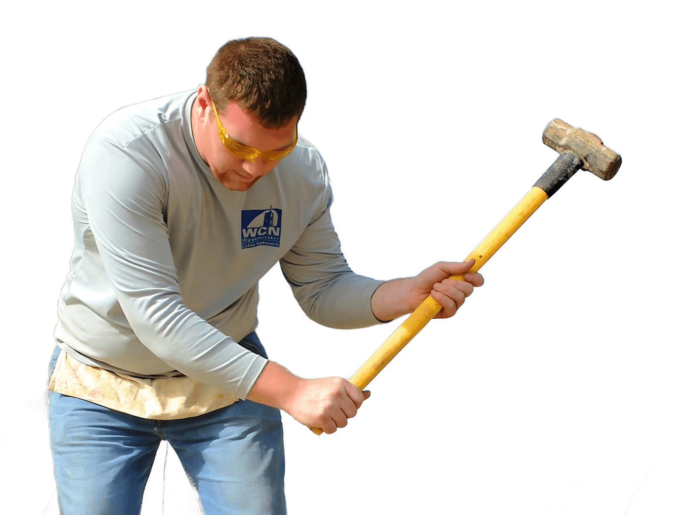

Your Home, Taken Care Of
Request a RepairDependable Home Repair
Service you can count on.
Quality Workmanship
Done carefully, done right.
Attention to Detail
Every project, big or small.

From everyday repairs to home improvement projects, Handy Hands Home Repair provides dependable, practical solutions to help keep your home safe, functional, and looking its best.
Request a RepairService you can count on.
Done carefully, done right.
Every project, big or small.
Everyday repairs and fixes that keep your home functioning properly.
Routine maintenance and repair work to keep your home in good condition.
Improve the functionality and appearance of your living spaces.
Practical repair and improvement solutions for the outside of your home.
When something around your home needs attention, you need a reliable team that gets the job done properly. Handy Hands Home Repair helps homeowners take care of repairs, maintenance, and improvement projects with a focus on quality workmanship and dependable service.
Handy Hands Home Repair provides practical solutions for a variety of home repair and maintenance needs.

Take care of the everyday repairs and fixes that keep your home functioning properly.
Request a Repair
Help keep your home in good condition with routine maintenance and repair work.
Request a Repair
Address interior repair needs and improve the functionality and appearance of your living spaces.
Request a Repair
Keep the outside of your home maintained with practical repair and improvement solutions.
Request a Repair
Get help with projects that improve, update, or enhance your home.
Request a Repair
No project is too small to deserve careful attention. Get dependable help with those smaller jobs around the house.
Request a Repair
Let Handy Hands Home Repair help you take care of it.
Call: (904) 444-2038